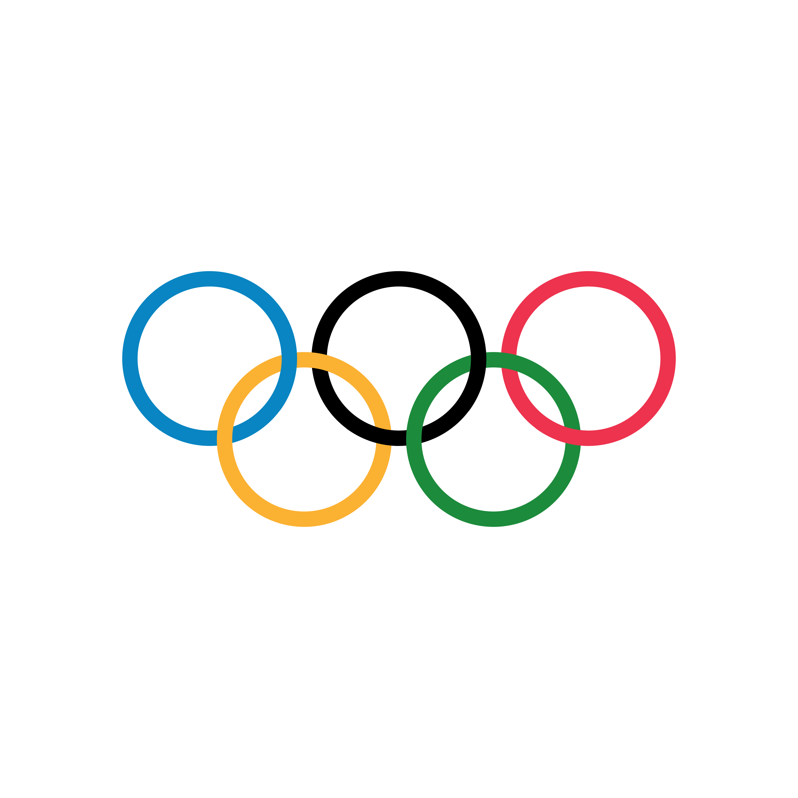

Olimpíadas
A Olimpíada é um evento esportivo internacional que reúne atletas de todo o mundo para competir em diversas modalidades.

História
As Olimpíadas, também conhecidas como Jogos Olímpicos, são um dos maiores eventos esportivos do mundo, reunindo atletas de diversos países para competir em várias modalidades. A origem das Olimpíadas remonta à Grécia Antiga, por volta de 776 a.C., na cidade de Olímpia. Naquela época, os jogos eram realizados em homenagem aos deuses gregos, especialmente Zeus, e tinham um forte caráter religioso.
Os Jogos Olímpicos da Antiguidade incluíam competições como atletismo, pugilato, pentatlo, corrida de bigas e pancrácio. Apenas homens podiam participar e assistir aos jogos, e os vencedores recebiam coroas de louro ou folhas de oliveira.
Os Jogos Olímpicos modernos foram idealizados pelo francês Pierre de Coubertin, que fundou o Comitê Olímpico Internacional (COI) em 1894. A primeira edição dos Jogos Olímpicos modernos ocorreu em Atenas, em 1896. Desde então, os Jogos Olímpicos são realizados a cada quatro anos, alternando entre edições de verão e inverno.